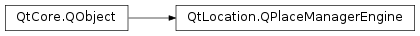

QPlaceManagerEngine¶
Synopsis¶
Functions¶
- def
manager() - def
managerName() - def
managerVersion()
Virtual functions¶
- def
category(categoryId) - def
childCategories(parentId) - def
childCategoryIds(categoryId) - def
compatiblePlace(original) - def
constructIconUrl(icon, size) - def
getPlaceContent(request) - def
getPlaceDetails(placeId) - def
initializeCategories() - def
locales() - def
matchingPlaces(request) - def
parentCategoryId(categoryId) - def
removeCategory(categoryId) - def
removePlace(placeId) - def
saveCategory(category, parentId) - def
savePlace(place) - def
search(request) - def
searchSuggestions(request) - def
setLocales(locales)
Signals¶
- def
categoryAdded(category, parentCategoryId) - def
categoryRemoved(categoryId, parentCategoryId) - def
categoryUpdated(category, parentCategoryId) - def
dataChanged() - def
error(arg__1, error[, errorString=”“]) - def
finished(reply) - def
placeAdded(placeId) - def
placeRemoved(placeId) - def
placeUpdated(placeId)
Detailed Description¶
The
PySide2.QtLocation.QPlaceManagerEngineclass provides an interface for implementers ofPySide2.QtLocation.QGeoServiceProviderplugins who want to provide access to place functionality.Application developers need not concern themselves with the
PySide2.QtLocation.QPlaceManagerEngine. Backend implementers however will need to derive fromPySide2.QtLocation.QPlaceManagerEngineand provide implementations for the abstract virtual functions.For more information on writing a backend see the Places Backend documentation.
See also
PySide2.QtLocation.QPlaceManager
-
class
PySide2.QtLocation.QPlaceManagerEngine(parameters[, parent=nullptr])¶ Parameters: - parameters –
PySide2.QtCore.QVariantMap - parent –
PySide2.QtCore.QObject
Constructs a new engine with the specified
parent, usingparametersto pass any implementation specific data to the engine.- parameters –
-
PySide2.QtLocation.QPlaceManagerEngine.category(categoryId)¶ Parameters: categoryId – unicode Return type: PySide2.QtLocation.QPlaceCategoryReturns the category corresponding to the given
categoryId.
-
PySide2.QtLocation.QPlaceManagerEngine.categoryAdded(category, parentCategoryId)¶ Parameters: - category –
PySide2.QtLocation.QPlaceCategory - parentCategoryId – unicode
- category –
-
PySide2.QtLocation.QPlaceManagerEngine.categoryRemoved(categoryId, parentCategoryId)¶ Parameters: - categoryId – unicode
- parentCategoryId – unicode
-
PySide2.QtLocation.QPlaceManagerEngine.categoryUpdated(category, parentCategoryId)¶ Parameters: - category –
PySide2.QtLocation.QPlaceCategory - parentCategoryId – unicode
- category –
-
PySide2.QtLocation.QPlaceManagerEngine.childCategories(parentId)¶ Parameters: parentId – unicode Return type: Returns a list of categories that are children of the category corresponding to
parentId. IfparentIdis empty, all the top level categories are returned.
-
PySide2.QtLocation.QPlaceManagerEngine.childCategoryIds(categoryId)¶ Parameters: categoryId – unicode Return type: list of strings Returns the child category identifiers of the category corresponding to
categoryId. IfcategoryIdis empty then all top level category identifiers are returned.
-
PySide2.QtLocation.QPlaceManagerEngine.compatiblePlace(original)¶ Parameters: original – PySide2.QtLocation.QPlaceReturn type: PySide2.QtLocation.QPlaceReturns a pruned or modified version of the
originalplace which is suitable to be saved by the manager engine.Only place details that are supported by this manager is present in the modified version. Manager specific data such as the place id, is not copied over from the
original.
-
PySide2.QtLocation.QPlaceManagerEngine.constructIconUrl(icon, size)¶ Parameters: - icon –
PySide2.QtLocation.QPlaceIcon - size –
PySide2.QtCore.QSize
Return type: PySide2.QtCore.QUrl(constPySide2.QtLocation.QPlaceIcon&icon, constPySide2.QtCore.QSize&size)Constructs an icon url from a given
icon,size. The URL of the icon image that most closely matches the given parameters is returned.- icon –
-
PySide2.QtLocation.QPlaceManagerEngine.dataChanged()¶
-
PySide2.QtLocation.QPlaceManagerEngine.error(arg__1, error[, errorString=""])¶ Parameters: - arg__1 –
PySide2.QtLocation.QPlaceReply - error –
PySide2.QtLocation.QPlaceReply.Error - errorString – unicode
- arg__1 –
-
PySide2.QtLocation.QPlaceManagerEngine.finished(reply)¶ Parameters: reply – PySide2.QtLocation.QPlaceReply
-
PySide2.QtLocation.QPlaceManagerEngine.getPlaceContent(request)¶ Parameters: request – PySide2.QtLocation.QPlaceContentRequestReturn type: PySide2.QtLocation.QPlaceContentReplyRetrieves content for a place according to the parameters specified in
request.
-
PySide2.QtLocation.QPlaceManagerEngine.getPlaceDetails(placeId)¶ Parameters: placeId – unicode Return type: PySide2.QtLocation.QPlaceDetailsReplyRetrieves details of place corresponding to the given
placeId.
-
PySide2.QtLocation.QPlaceManagerEngine.initializeCategories()¶ Return type: PySide2.QtLocation.QPlaceReplyInitializes the categories of the manager engine.
-
PySide2.QtLocation.QPlaceManagerEngine.locales()¶ Return type: Returns a list of preferred locales. The locales are used as a hint to the manager engine for what language place and category details should be returned in.
If the first specified locale cannot be accommodated, the manager engine falls back to the next and so forth.
Support for locales may vary from provider to provider. For those that do support it, by default, the
global default localewill be used. If the manager engine has no locales assigned to it, it implicitly uses the global default locale. For engines that do not support locales, the locale list is always empty.
-
PySide2.QtLocation.QPlaceManagerEngine.manager()¶ Return type: PySide2.QtLocation.QPlaceManagerReturns the manager instance used to create this engine.
-
PySide2.QtLocation.QPlaceManagerEngine.managerName()¶ Return type: unicode Returns the name which this engine implementation uses to distinguish itself from the implementations provided by other plugins.
The manager name is automatically set to be the same as the QGeoServiceProviderFactory::providerName().
-
PySide2.QtLocation.QPlaceManagerEngine.managerVersion()¶ Return type: PySide2.QtCore.intReturns the version of this engine implementation.
The manager version is automatically set to be the same as the QGeoServiceProviderFactory::providerVersion().
-
PySide2.QtLocation.QPlaceManagerEngine.matchingPlaces(request)¶ Parameters: request – PySide2.QtLocation.QPlaceMatchRequestReturn type: PySide2.QtLocation.QPlaceMatchReplyReturns a reply which contains a list of places which correspond/match those specified in
request.
-
PySide2.QtLocation.QPlaceManagerEngine.parentCategoryId(categoryId)¶ Parameters: categoryId – unicode Return type: unicode Returns the parent category identifier of the category corresponding to
categoryId.
-
PySide2.QtLocation.QPlaceManagerEngine.placeAdded(placeId)¶ Parameters: placeId – unicode
-
PySide2.QtLocation.QPlaceManagerEngine.placeRemoved(placeId)¶ Parameters: placeId – unicode
-
PySide2.QtLocation.QPlaceManagerEngine.placeUpdated(placeId)¶ Parameters: placeId – unicode
-
PySide2.QtLocation.QPlaceManagerEngine.removeCategory(categoryId)¶ Parameters: categoryId – unicode Return type: PySide2.QtLocation.QPlaceIdReplyRemoves the category corresponding to
categoryIdfrom the manager engine’s datastore.
-
PySide2.QtLocation.QPlaceManagerEngine.removePlace(placeId)¶ Parameters: placeId – unicode Return type: PySide2.QtLocation.QPlaceIdReplyRemoves the place corresponding to
placeIdfrom the manager engine’s datastore.
-
PySide2.QtLocation.QPlaceManagerEngine.saveCategory(category, parentId)¶ Parameters: - category –
PySide2.QtLocation.QPlaceCategory - parentId – unicode
Return type: Saves a
categorythat is a child of the category specified byparentId. An emptyparentIdmeanscategoryis saved as a top level category.- category –
-
PySide2.QtLocation.QPlaceManagerEngine.savePlace(place)¶ Parameters: place – PySide2.QtLocation.QPlaceReturn type: PySide2.QtLocation.QPlaceIdReplySaves a specified
placeto the manager engine’s datastore.
-
PySide2.QtLocation.QPlaceManagerEngine.search(request)¶ Parameters: request – PySide2.QtLocation.QPlaceSearchRequestReturn type: PySide2.QtLocation.QPlaceSearchReplySearches for places according to the parameters specified in
request.
-
PySide2.QtLocation.QPlaceManagerEngine.searchSuggestions(request)¶ Parameters: request – PySide2.QtLocation.QPlaceSearchRequestReturn type: PySide2.QtLocation.QPlaceSearchSuggestionReplyRequests a set of search term suggestions according to the parameters specified in
request.
-
PySide2.QtLocation.QPlaceManagerEngine.setLocales(locales)¶ Parameters: locales – Set the list of preferred
locales.
© 2018 The Qt Company Ltd. Documentation contributions included herein are the copyrights of their respective owners. The documentation provided herein is licensed under the terms of the GNU Free Documentation License version 1.3 as published by the Free Software Foundation. Qt and respective logos are trademarks of The Qt Company Ltd. in Finland and/or other countries worldwide. All other trademarks are property of their respective owners.